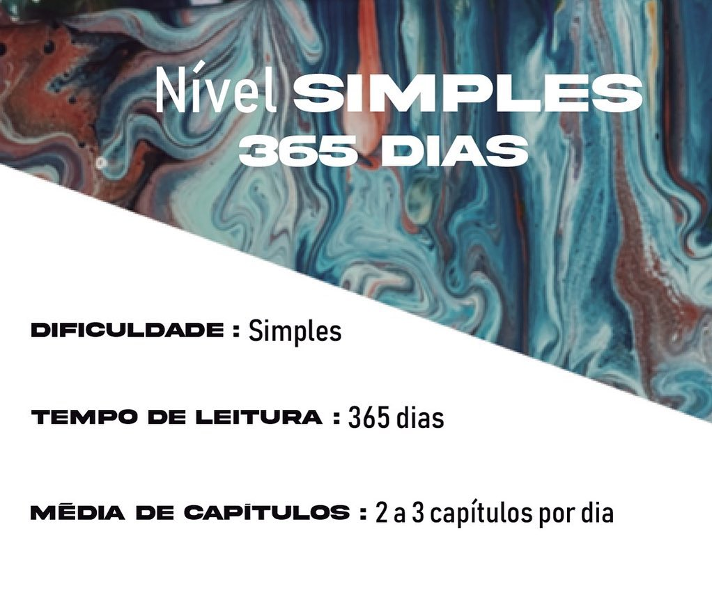

<!--ion-app>
    <ion-content fullscreen>
        <div class="nivel">
            <div class="imagem-nivel">
                <div>
                    
                </div>

            </div>
            <div class="tt">
                <ion-grid>
                    <ion-row>
                        <ion-col>
                            <div>
                                <ion-button routerLink="../home">
                                    <ion-icon name="chevron-back-outline"></ion-icon>
                                </ion-button>
                            </div>
                        </ion-col>
                        <ion-col>
                            <div>
                                <ion-button routerLink="../home">
                                    <ion-icon name="chevron-forward-outline"></ion-icon>
                                </ion-button>
                            </div>
                        </ion-col>
                    </ion-row>

                </ion-grid>
            </div>
        </div>
    </ion-content>
</ion-app-->

<ion-app>
    <ion-header translucent>
      <ion-toolbar>
        <ion-title>Simples</ion-title>
      </ion-toolbar>
    </ion-header>,
    <ion-content fullscreen>
      <ion-card class="imagem-nivel">
        
        <ion-card-header>
          <ion-card-subtitle>Destination</ion-card-subtitle>
          <ion-card-title>Madison, WI</ion-card-title>
        </ion-card-header>
        <ion-card-content>
          Founded in 1829 on an isthmus between Lake Monona and Lake Mendota, Madison was named the capital of the Wisconsin Territory in 1836.
        </ion-card-content>
      </ion-card>
    </ion-content>
  </ion-app>